Exercises on differential equation¶
The pendulum equation¶
We consider the equation
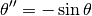
Write a function that returns an array containing the position and the angular velocity of the pendulum for 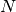 instants 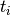 between 0 and  .
.
The initial position is 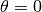. Plot the phase space trajectory for different values of the initial velocity. Angle will be represented between -π and π.
Solution
from scipy.integrate import ode
from numpy import *
def f(t, Y):
y, yprime=Y
return array([yprime, -sin(y)])
def pendule(theta_0, vit_ang, T, N=1000):
r = ode(f).set_integrator('vode')
r.set_initial_value(array([theta_0, vit_ang]),0)
TT = linspace(0,T,N+1)
output = [[0, theta_0, vit_ang]] # Output is a list of list
for i, t in enumerate(TT[1:]):
r.integrate(t)
output.append([t, r.y[0], r.y[1]])
return array(output) # This is a 2D array
figure(1)
clf()
Tvit_ini = linspace(-3,3, 61)
for vit_ini in Tvit_ini:
a = pendule(0, vit_ini, 100)
a[:,1] = ((a[:,1]+pi)%(2*pi) - pi) # Tricks to be between -pi and pi
plot(a[:,1], a[:,2], '+')
xlim(-pi,pi)
Solving the Schrödinger equation using the finite element method¶
Let us consider the Schrödinger equation with hbar = m = 1
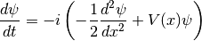
The potential is 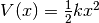 with 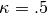.
To solve the equation, we will truncate the x-axis to values between 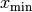 and 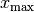. We will also discretize the x-axis with small steps (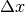).
The term 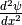 will be approximated using  .
.
For the initial state, we will take a Gaussian distribution 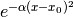. We will use 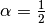 and 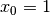.
Calculate and plot 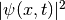 as a function of  for 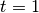 using the
for 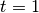 using the zvode solver with an absolute precision of 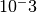.
Solution
from scipy.integrate import ode
from numpy import *
Deltax = 0.1
X_MIN = -10
X_MAX = 10
alpha = .4
x0 = 1
kappa = .5
T = 10
N = 1000
x = linspace(X_MIN, X_MAX, (X_MAX-X_MIN)/Deltax + 1)
psi_0 = exp(-alpha*(x-x0)**2)
psi_0 = psi_0 / sqrt(sum(abs(psi_0**2)))
V = -.5*kappa*x**2
psi_dot = zeros(len(x), dtype="complex128")
def f(t, psi):
energy = .5*(psi[2:] - 2*psi[1:-1] + psi[:-2])/Deltax**2
pot = V[1:-1]*psi[1:-1]
psi_dot[1:-1] = -1j*(energy + pot)
return psi_dot
r = ode(f).set_integrator('zvode', atol=1E-3)
r.set_initial_value(psi_0,0)
psi_f = r.integrate(1)
figure(0)
plot(x, abs(psi_f)**2)
# Calculate the mean position and relative width.
figure(1)
r = ode(f).set_integrator('zvode', atol=1E-3)
r.set_initial_value(psi_0,0)
dT = linspace(0,T,N+1)
out = []
for i, t in enumerate(dT):
if t>r.t:
r.integrate(t)
print i
out.append([t, sum(x*abs(r.y)**2)/sum(abs(r.y)**2), (mean(x**2*abs(r.y)**2) - mean(x*abs(r.y)**2)**2)/mean(abs(r.y)**2)])